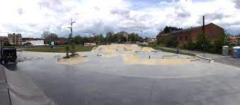
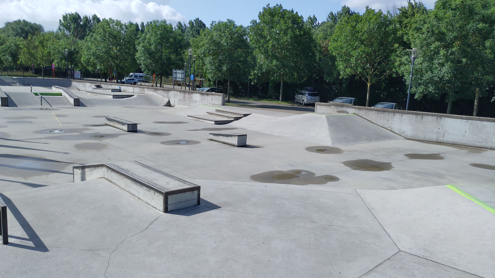

Blaarmeersen is het grootste skatepark van België en het op 2 na grootste van europa.
Het skatepark heeft een oppervlakte van 4000 vierkante meter,dus iets kleiner dan een voetbalveld
Het bevindt zich in Gent en heeft geen beperking van het aantal skaters dus reserveren is niet nodig.
De stad zorgt er ook voor cursussen en sportkampen.

Dit skatepark is een indoor skatepark dat zich in wevelgem bevindt,
het skatepark heeft aangepaste openingsuren voor skaters,Bmx'en en rollerschaatsen
| openingsdagen | uren | voor wie? |
| maandag | 13:00 - 19:30 | (SKATEBOARD / ROLLERSKATE / BMX) |
| dinsdag | 13:00 - 19:30 | SKATEBOARD |
| woensdag | 13:00 - 19:30 | (SKATEBOARD / ROLLERSKATE / BMX) |
| donderdag | 13:00 - 22:00 | (SKATEBOARD) |
| vrijdag | 13:00 - 18:00 | (SKATEBOARD / ROLLERSKATE / BMX) |
| zaterdag | 10:00 - 19:30 | (SKATEBOARD) |
| zondag | 10:00 - 14:00 | (ROLLERSKATE) |

luxaplast is een skatepark in Kortrijk het is outdoor je wel besschut zitn
door de ring van kortrijk die boven het skatepark loopt. Het skatepark is 600 vierkante meter groot
en heeft stairq ledgen en twee quarters

trax is een skatepark in Roeselare waar je buiten kan skaten maar aan de andere kant
ook een overdekking zodat skaters tijdens natte dagen binnen kunnen skaten.

Oodeekay is een skatepark in oostduinkerke,het is in beton aangelegd wat je
soepel laat rijden en tricks laat doen
